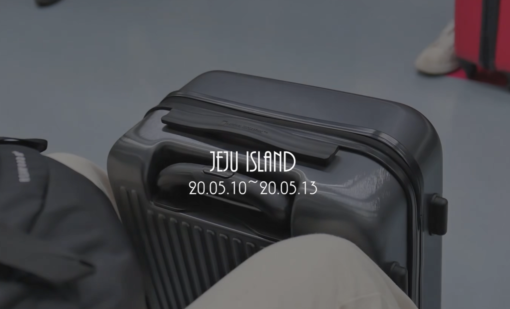

YouTude
원정희의 유튜브 웹 따라 만들어보기 연습중입니다. 본 동영상은 예전에 만든 아두이노에 gps센서를 달아 gps 정보를 가지고 구글 지도에 위치를 보여주고 보내고자 하는 사람한테 정보를 주는 영상입니다.
조회수 1 * 2020.8.12
12
0
저장
원정희
100 구독
구독
저는 1995년 11월 11월에 여주에서 태어나서 국민대학교 소프트웨어 학과를 재학중인 원정희 입니다. html + css + js 를 공부 후 리액트도 공부하고 있는 중입니다. 현재는 유튜브를 클론 코딩해보고 나중에 리액트로도 만들어볼 예정입니다.
다음 동영상

제주 여행을 떠나자 1탄
원정희
12회
제주 여행을 떠나자 2탄
원정희
5회
제주 여행을 떠나자 3탄
원정희
111회